Turning Circle-based
Control Barrier Function
for Efficient Collision Avoidance
of Nonholonomic Vehicles
Changyu Lee1, Kiyong Park2, and Jinwhan Kim2,*
1Kongju National University · 2KAIST
Distance constraints in MPC (MPC-DC)

Distance constraints need a long horizon
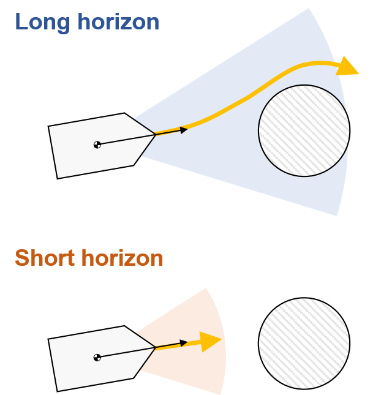
Same scenario — only the prediction horizon of MPC-DC differs
→ MPC-DC requires a long prediction horizon, which increases the computational load
CBF constraints in MPC (MPC-CBF)
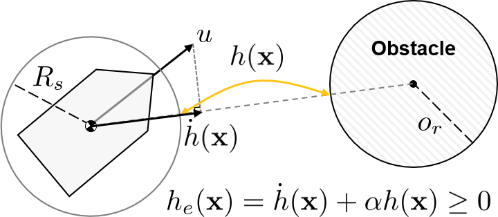
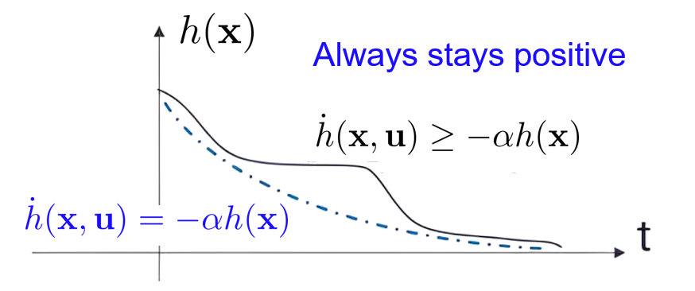
- The CBF limits the speed toward an obstacle in proportion to the relative distance from it
- MPC-CBF with a shorter horizon can still achieve performance similar to MPC-DC [1]
ED-CBF overlooks heading and turning
ED-CBF values for a circular obstacle
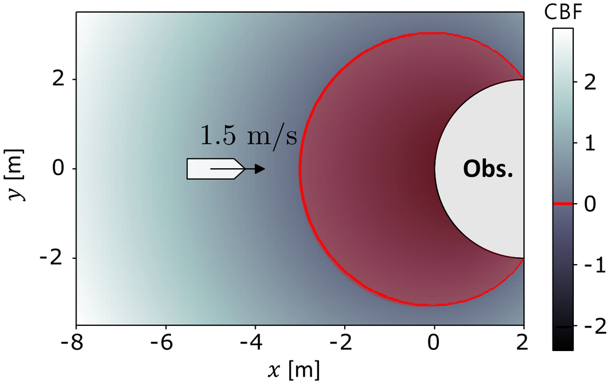
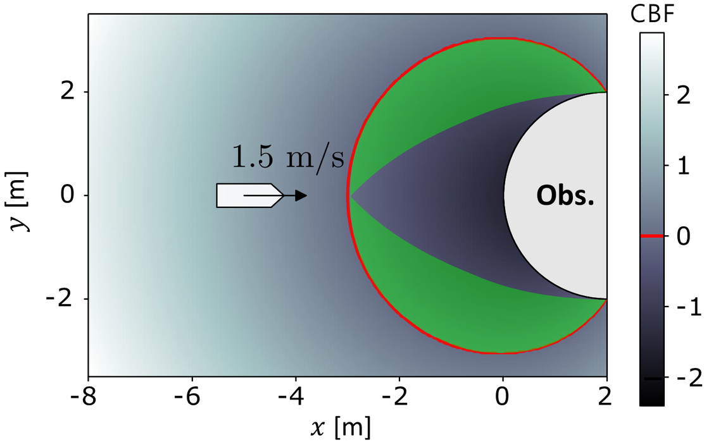
Only the closest Euclidean distance
Conventional CBFs measure the shortest distance to the obstacle — the ED-CBF
Heading and turning are ignored
Limited turning capability is a common characteristic of nonholonomic vehicles — cars, robots, ships
Safe states are perceived as risks
States that are actually safe for navigation are restricted → conservative trajectories
Nonholonomic characteristics in the CBF design → Turning Circle-based CBF (TC-CBF)
Turning Circle-based CBF (TC-CBF)
Clearance is measured from the vehicle's left and right turning circles
- Always leaves space on the left or right to avoid obstacles
- In MPC as a discrete-time CBF: \(\Delta h_t(\mathbf{x}_i,\mathbf{u}_i)+\alpha_t\,h_t(\mathbf{x}_i)\ge 0\)
TC-CBF restricts far fewer states
ED-CBF
conventional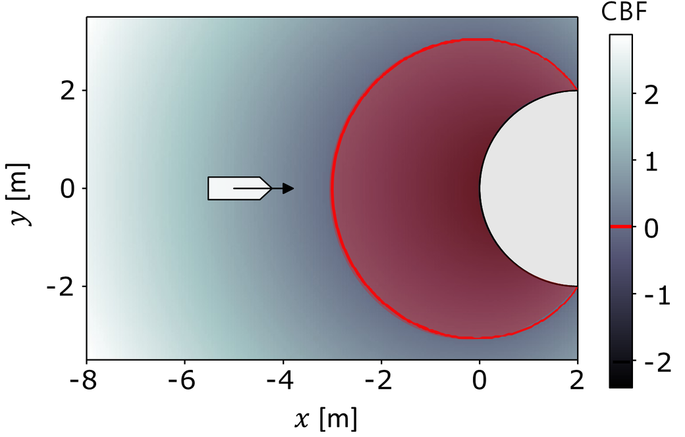
TC-CBF
proposed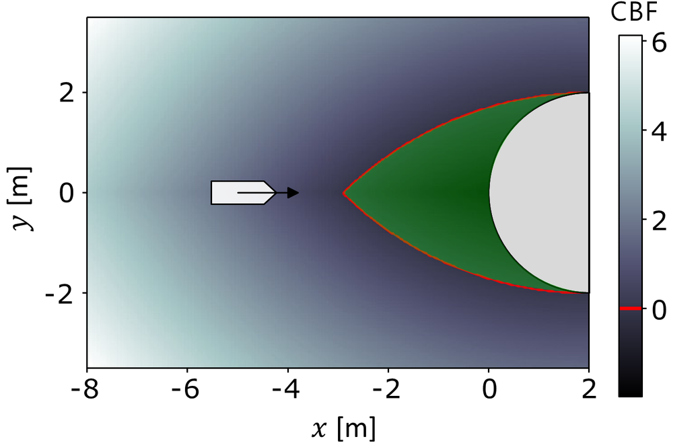
ED-CBF stays conservative after tuning
Even with different parameter sets, ED-CBF generates more conservative trajectories than TC-CBF due to its inherent characteristics
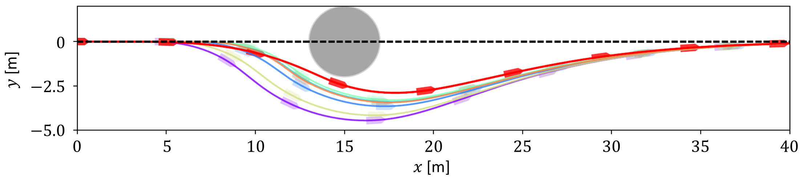
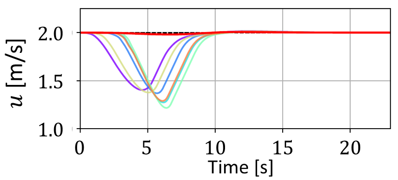
TC-CBF: no slowdown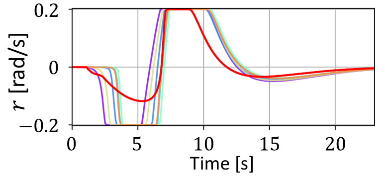
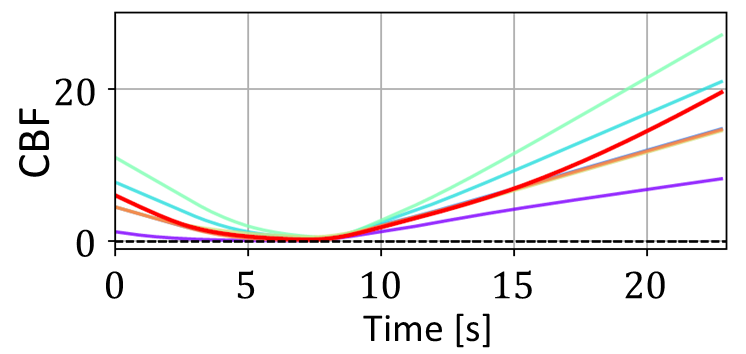
Head-on: avoidance without slowing down
TC-CBF starts a gentle turn early instead of braking hard — the oncoming obstacle is avoided at full speed
Moving obstacle approaching head-onobstacle moves from x = 25 m toward the vehicle (0 → 30 s)
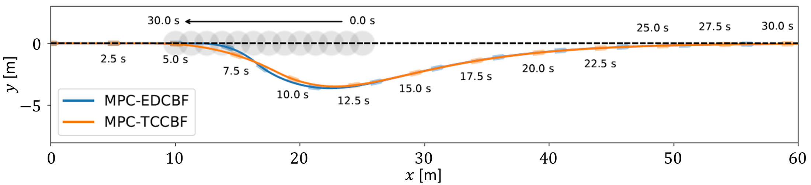
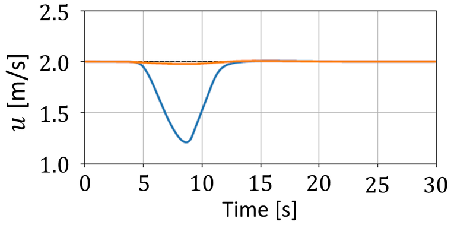
ED-CBF slows to ≈1.2 m/s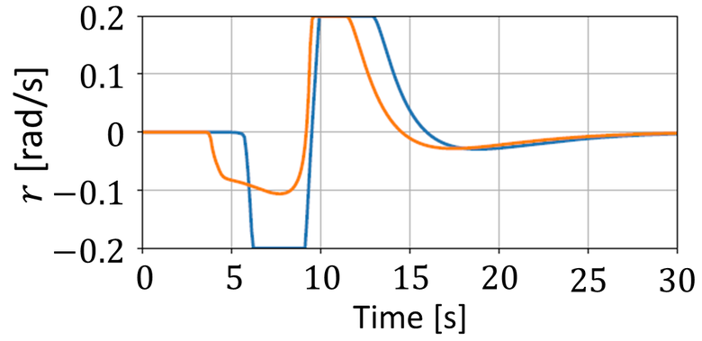
ED-CBF saturates at −0.2 rad/s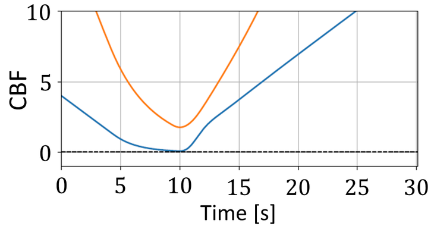
TC-CBF keeps a marginOvertaking: a smaller detour, no slowdown
MPC-TCCBF passes with about half the lateral deviation (≈1.3 m vs ≈2.7 m) while keeping the desired speed
Overtaking a slower obstacleobstacle moves in +x along the path (0 → 20 s)
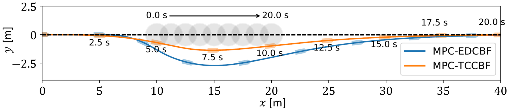
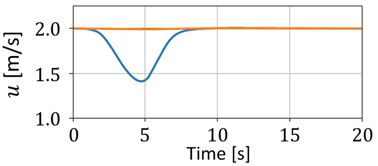
ED-CBF slows to ≈1.4 m/s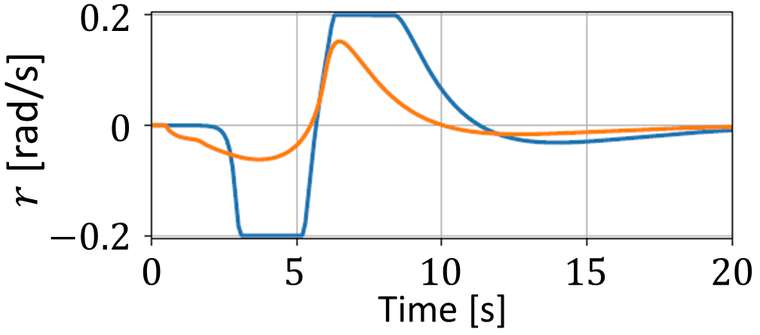
ED-CBF saturates at ±0.2 rad/s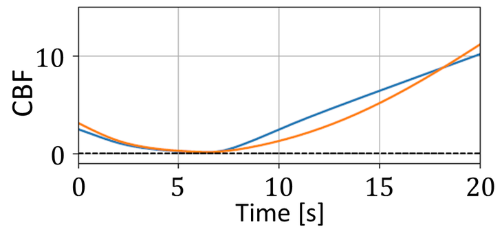
MPC-TCCBF is more efficient
| Scenario | Controller | Arrival time \(t_a\) [s] | Speed error \(e_{\mathrm{speed}}\) | Cross-track error \(e_{\mathrm{cte}}\) |
|---|---|---|---|---|
| Static | MPC-EDCBF | 21.6 | 0.088 | 1.273 |
| MPC-TCCBF | 20.4 | 0.005 | 0.962 | |
| Head-on | MPC-EDCBF | 26.9 | 0.107 | 0.889 |
| MPC-TCCBF | 25.5 | 0.019 | 0.659 | |
| Overtaking | MPC-EDCBF | 21.3 | 0.087 | 0.916 |
| MPC-TCCBF | 20.1 | 0.002 | 0.450 |
\(t_a\) arrival time · \(e_{\mathrm{speed}}\) average speed tracking error · \(e_{\mathrm{cte}}\) average cross-track error
vs MPC-EDCBF · average over the 3 scenarios
Real-world validation with an ASV
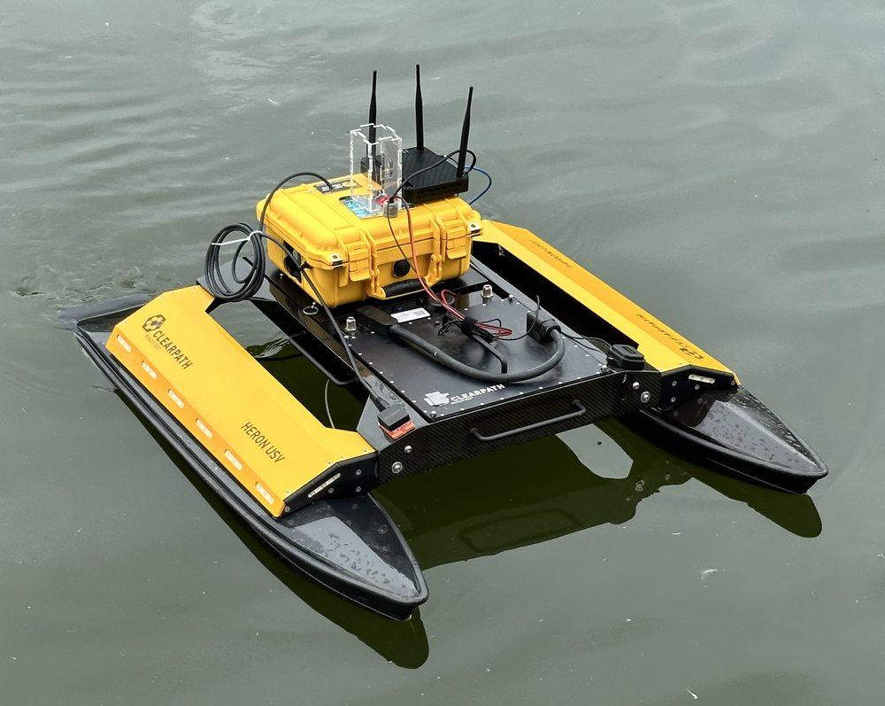
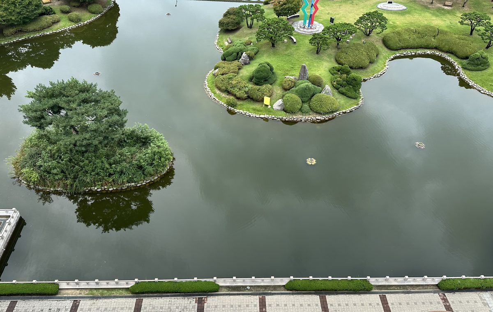
Differential-thrust catamaran ASV1.35 × 0.98 × 0.32 m · desired speed 0.9 m/s
\(M\dot{\nu}+C(\nu)\nu+D(\nu)\nu=\tau_c,\ \ \dot{\eta}=R(\psi)\nu\)\(\nu=[u,v,r]^\top\) velocities · \(\eta=[x,y,\psi]^\top\) pose
MPC-TCCBF / MPC-EDCBF: \(N=20,\ T_s=0.1\) sMPC-DC: \(N=50,\ T_s=0.2\) s · static, head-on, overtaking
Smooth avoidance with a short horizon
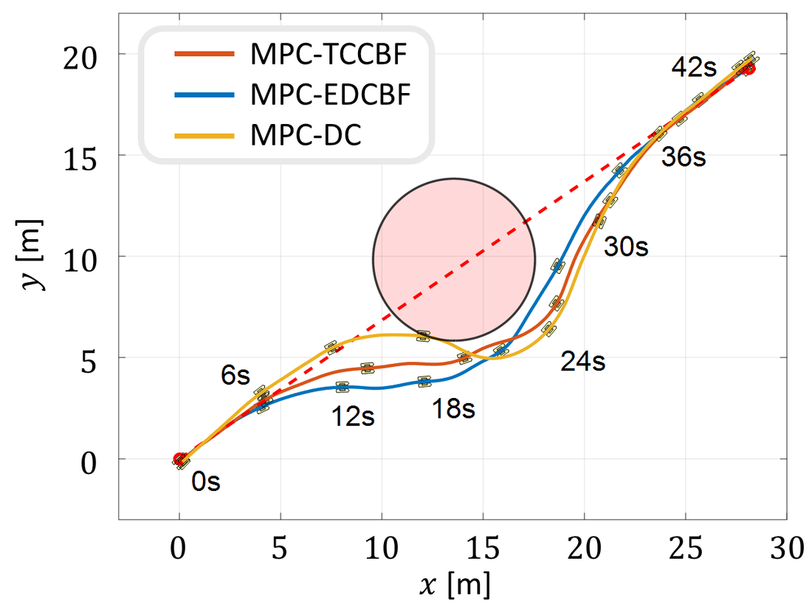
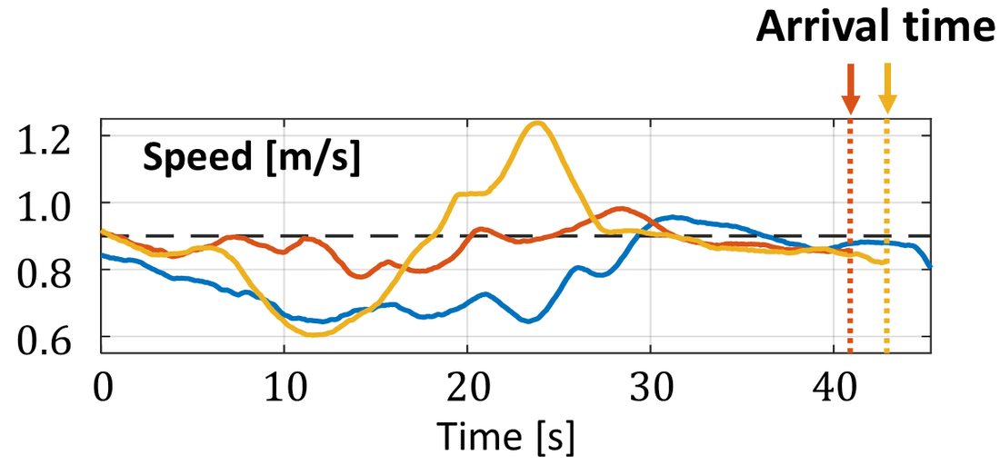
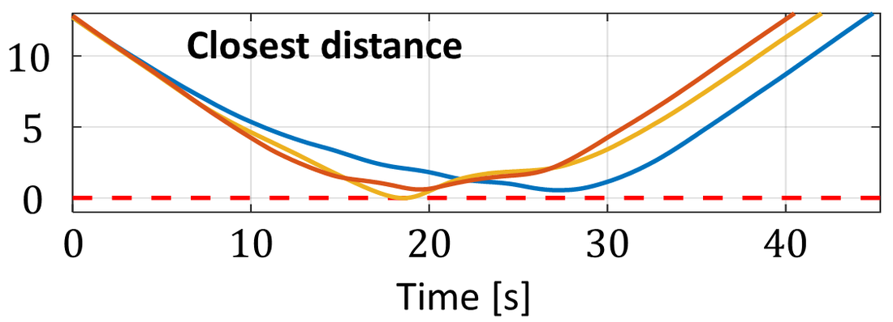
Aggressive maneuvers when close to the obstacle, even with a long horizon
Both CBF controllers avoid smoothly with a significantly shorter horizon
Arrival time 10%↓ · speed error 68%↓ · cross-track error 8%↓
Head-on: faster, closer to the path
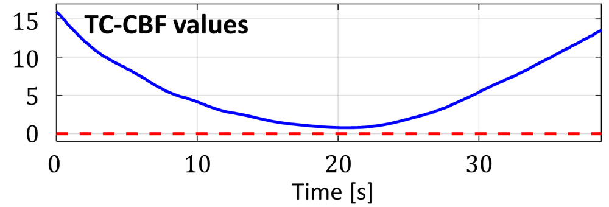
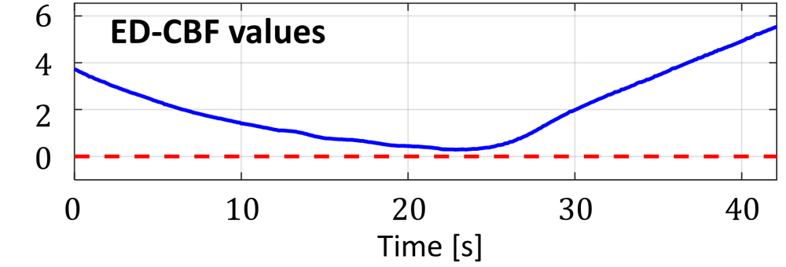
Overtaking: experiment and CBF landscape
MPC-TCCBF outperforms MPC-EDCBF
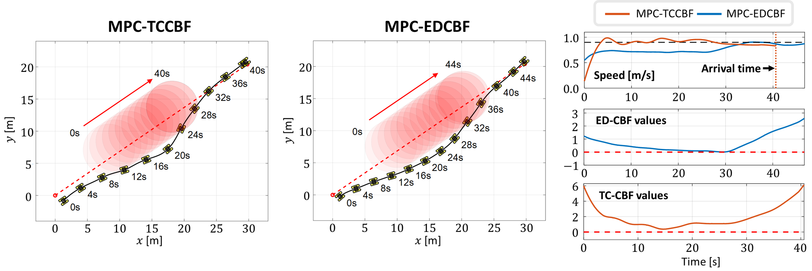
46.8 → 40.7 s
0.133 → 0.063
2.113 → 1.776
Faster and more accurate in all scenarios
| Scenario | Controller | Arrival time \(t_a\) [s] | Speed error \(e_{\mathrm{speed}}\) | Cross-track error \(e_{\mathrm{cte}}\) |
|---|---|---|---|---|
| Static | MPC-EDCBF | 45.4 | 0.124 | 1.765 |
| MPC-TCCBF | 41.0 | 0.040 | 1.623 | |
| Head-on | MPC-EDCBF | 42.2 | 0.097 | 2.014 |
| MPC-TCCBF | 38.8 | 0.051 | 1.453 | |
| Overtaking | MPC-EDCBF | 46.8 | 0.133 | 2.113 |
| MPC-TCCBF | 40.7 | 0.063 | 1.776 |
Short-horizon MPC (\(N=20,\ T_s=0.1\) s) on the Clearpath Heron · desired speed 0.9 m/s
vs MPC-EDCBF · average over the 3 scenarios
TC-CBF for efficient collision avoidance
Turning circles in the CBF
The CBF is defined by the clearance between the obstacle and the vehicle's left and right turning circles, so heading and limited turning capability enter the safety constraint.
Less conservative, still safe
Only states from which neither turn avoids the obstacle are restricted — MPC-TCCBF avoids unnecessary slowdowns and aggressive turns with a short horizon.
Validated on a real ASV
Unicycle simulations and Heron ASV experiments: vs MPC-EDCBF, arrival time 10%↓, speed error 56%↓, cross-track error 17%↓ on average.

Thank you
Questions & discussion
Joint work with Kiyong Park and Jinwhan Kim (KAIST)sail-knu.github.io/Home